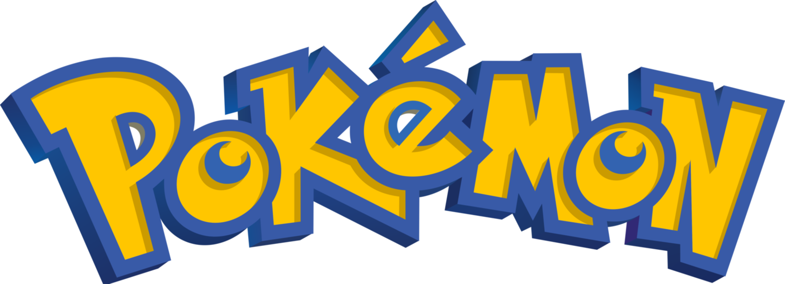

Your classic, favorite
#001
Bulbasaur
Seed Pokémon
- Type: Grass,Poison
Bulbasaur is a small, quadruped Pokémon that has green to bluish-green skin with darker green patches. It has red eyes with white pupils and pointed, ear-like structures on top of its head. Its snout is short and blunt, and it has a wide mouth. A pair of small, pointed teeth are visible in the upper jaw when its mouth is open. Each of its thick legs ends with three sharp claws. On its back is a green plant bulb, which is grown from a seed planted there at birth. The bulb provides it with energy through photosynthesis as well as from the nutrient-rich seeds contained within.
#002
Ivysaur
Seed Pokémon
- Type: Grass,Poison
Ivysaur is a quadruped Pokémon similar to a dinosaur. It has blue-green skin with darker patches. On top of its head are pointed ears with black inside, and it has narrow red to purple eyes. It has a short, rounded snout with a wide mouth. Two pointed teeth protrude from its upper jaw. Each of its feet have three claws on them. The bulb on its back has bloomed into a large pink bud. A short brown trunk surrounded by leafy green fronds supports the bud. The weight of the plant prevents Ivysaur from standing on its hind legs and forces its legs to grow sturdy. When its flower is ready to bloom, it gives off a distinct, strong sweet-smelling aroma and starts swelling. Ivysaur will also start spending more time in sunlight in preparation for its upcoming evolution. Exposure to sunlight adds to the strength of both Ivysaur and its plant. Ivysaur's natural habitat is plains. However, it is rare, as many are in captivity.
#003
Venusaur
Seed Pokémon

- Type: Grass,Poison
Venusaur is a squat, quadruped Pokémon with bumpy, bluish green skin. It has small, circular red eyes, a short, blunt snout, and a wide mouth with two pointed teeth in the upper jaw and four in the lower jaw. On top of its head are small, pointed ears with reddish pink insides. It has three clawed toes on each foot. The bud on its back has bloomed in a large pink, white-spotted flower. The flower is supported by a thick, brown trunk surrounded by green fronds. A female Venusaur will have a seed in the center of its flower.
#004
Charmander
Lizard Pokémon
- Type: Fire
Charmander is a bipedal, reptilian Pokémon with a primarily orange body. Its underside from the chest down and soles are cream-colored. It has two small fangs visible in its upper and lower jaws and blue eyes. Its arms and legs are short with four fingers and three clawed toes. A fire burns at the tip of this Pokémon’s slender tail, and has blazed there since Charmander’s birth. The flame can be used as an indication of Charmander's health and mood, burning brightly when the Pokémon is strong, weakly when it is exhausted, wavering when it is happy, and blazing when it is enraged. It is said that Charmander dies if its flame goes out. However, if the Pokémon is healthy, the flame will continue to burn if gets a bit wet and is said to steam in the rain.
#005
Charmeleon
Flame Pokémon
- Type: Fire
Charmeleon is a bipedal, reptilian creature. It has crimson scales and a cream underside. There is a horn-like protrusion on the back of its head, and it has narrow green eyes and a long snout. It has relatively long arms with three sharp claws. Its short legs have feet with three claws and cream-colored soles. The tip of its long, powerful tail has a flame burning on it. The temperature rises to unbearable levels if Charmeleon swings its tail.
#006
Charizard
Flame Pokémon

- Type: Fire,
Charizard is a draconic, bipedal Pokémon. It is primarily orange with a cream underside from the chest to the tip of its tail, which burns with a sizable flame. Charizard has a long neck, small blue eyes, raised nostrils, and two blunt horns protruding from the back of its rectangular head. There are two fangs visible in the upper jaw when its mouth is closed. Two large wings with teal undersides sprout from its back, and a horn-like appendage juts out from the third joint of each wing. Charizard's arms are short and skinny compared to its robust belly, and each limb has three white claws. It has stocky legs and cream-colored soles under its feet.
#007
Squirtle
Tiny Turtle Pokémon
- Type: Water
Squirtle is a small Pokémon that resembles a light blue turtle. While it typically walks on its two short legs, it has been shown to run on all fours in Super Smash Bros. Brawl. It has large brown eyes and a slightly hooked upper lip. Each of its hands and feet have three pointed digits. The end of its long tail curls inward. Its body is encased by a tough shell that forms and hardens after birth. This shell is brown on the top, pale yellow on the bottom, and has a thick white ridge between the two halves.
#008
Wartortle
Turtle Pokémon
- Type: Water
Wartortle is a bipedal, indigo-blue Pokémon similar to a turtle. It has brown eyes, a dark blue streak on each cheek, and two sharp teeth protruding from its upper jaw. It has three clawed fingers and pointed toes. Bluish white fur covers its long ears and tail. A brown shell with a pale yellow underside encases its body. A thick, white rim separates the upper and lower halves of the shell. As Wartortle grows old, its tail fur will darken, and it may have algae growing on its shell. The shell may also carry scars from past battles.
#009
Blastoise
Shellfish Pokémon
- Type: Water
Blastoise is a large, bipedal tortoise-like Pokémon. Its body is dark blue and is mostly hidden by its tough, brown shell. This shell has a pale yellow underside and a white ridge encircling its arms and separating the upper and lower halves. Two powerful water cannons reside in the top sides of its shell. These cannons can be extended or withdrawn and can be used to assist in high-speed charges. Blastoise's head has triangular ears that are black on the inside, small brown eyes, and a cream-colored lower jaw. Its arms are thick and striated with three claws on each hand. Its feet have three claws on the front and one on the back. It has a stubby tail.
#150
Mewtwo
Genetic Pokémon
- Type: Psychic
Mewtwo is a Pokémon created by science. It is a bipedal, humanoid creature with some feline features. It is primarily gray with a long, purple tail. On top of its head are two short, blunt horns, and it has purple eyes. A tube extends from the back of its skull to the top of its spine, bypassing its neck. It has a defined chest and shoulders, which resemble a breastplate. The three digits on each hand and foot have spherical tips. Its tail is thick at the base, but thins before ending in a small bulb.
#151
Mew
New Species Pokémon

- Type: Psychic
Mew is a pink, bipedal Pokémon with mammalian features. Its snout is short and wide, and it has triangular ears and large, blue eyes. It has short arms with three-fingered paws, large hind legs and feet with oval markings on the soles, and a long, thin tail ending in an ovoid tip. Its fur is so fine and thin, it can only be seen under a microscope. Mew is said to have the DNA of every single Pokémon contained within its body, and as such is able to learn any attack.